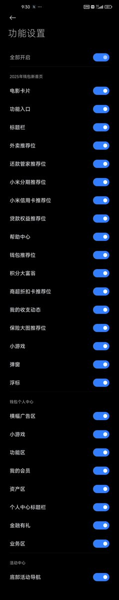

冰棍好烫喵 🍥🧊🍔🍟🍜🍣🍙🍧🍮🍩☕️💊🤤
@bghtnya
@tangeorange 论刷机的重要性

橙子
@tangeorange
这是每台小米手机里都会自带的钱包软件。如图一，钱包软件默认界面为图，如此杂乱不堪，令人发指。
可笑的是，当我们进入设置，尝试关闭这些功能的时候，如视频，所谓的 “全部开启” 开关并不能一键使所有功能关闭，而需要像视频一样一项项地关闭所有功能，图三是所有功能列表。 https://t.co/FfE7fvUddV